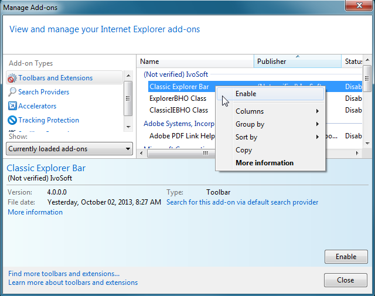
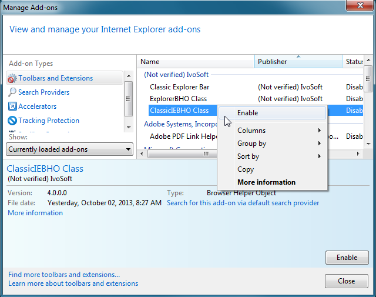

|
|
General Information
Installation
Classic Start Menu
Classic Explorer
Classic IE
Performance Tips
Forum Spam
General Information
What is Classic Shell?
Classic Shell™
is free software that improves your productivity, enhances the usability of Windows and
empowers you to use the computer the way you like it. It has a customizable start menu, it adds a toolbar
and a status bar for Windows Explorer and supports a variety of other features.
There are 3 major components - Classic Start Menu, Classic Explorer and Classic IE.
Look here for the full list of features.
What is not Classic Shell?
Some people have misconceptions about the scope of Classic Shell. Here's some of the things that it is not:
- It is not an Explorer replacement. It adds some UI elements to Explorer, but this is still the standard Windows Explorer that you know and love
- It does not implement the Desktop environment in Windows 8. The Desktop you see in Windows 8 is part of the operating system that you can access from one of the Metro tiles. Classic Shell just makes it easier to get to it
- It is not a "make my computer look exactly like Windows XP". It only brings back few select features from the XP days, not everything. You are not going to find the puppy search here
- It is not a theme or skin for Windows. Classic Shell only changes some visual aspects of Windows Explorer and Internet Explorer. These features are very limited in scope. No other applications are affected
What is the story behind Classic Shell?
The project started back in 2008 as a small utility to replace the copy
UI for Vista. In 2009 a friend switched from XP to Vista and complained
that the Up button was missing. That was the second feature that was
implemented. Later in October 2009 I switched to Windows 7 and was very
disappointed that the classic start menu was gone, so I went to make my
own. After the start menu was done I decided to make this project
public and added it to Source Forge. The rest is history.
What are
the system requirements of Classic Shell?
Classic Shell supports Windows 7, Windows 8, Windows 8.1, Windows Server 2008 R2,
Windows Server 2012 and Windows Server 2012 R2. There is only one installer for all and it
covers
both 32-bit and 64-bit operating systems. Not all features are supported for all versions of Windows.
Does Classic Shell support Windows 10?
Starting with version 4.2.4, Classic Shell fully supports Windows 10.
Does Classic Shell support Windows RT?
No, Classic Shell does not work on Windows RT (either 8 or 8.1). There are two reasons for that. First, Windows RT runs on devices with a different CPU, which is incompatible with regular Windows applications. And second,
Windows RT does not allow non-Microsoft software to run on its desktop.
Is Classic Shell Free?
Yes, Classic Shell is free for both personal and commercial use*.
You are permitted to distribute the Classic Shell installer or offer it for download on your website, as long as:
- You do it free of charge
- You don't misrepresent the origin of the software
- You don't modify the software in any way
- Wrapping Classic Shell in a secondary installer or bundling with other software is not allowed
The Classic Shell name and logo are trademarks and cannot be used to identify other products or services.
* "Commercial use" means you can use it in a commercial environment - your office, school, etc. It does not mean you can sell the software.
If you are operating a computer shop it is permitted to install Classic Shell for your customers as long as you do it free of charge. If you do this on a large scale a donation is encouraged.
I know
it's free, but can I still donate to the project?
Yes,
The Classic Shell project accepts donations:
There are other
ways to support Classic Shell too. Report bugs or feature
suggestions. Help other users with their problems. Mention how cool it
is
on web forums or to your friends :)
Is Classic Shell open-source?
Yes, the latest version of Classic Shell 4.3.1 is open-source. The source code can be downloaded from Source Forge.
How do I
report bugs or suggest new features?
Please submit bug reports to the Bug reporting forum.
Post feature requests in the Feature requests forum.
You can also use the Discussion forums.
Discussion forum in Russian is also available.
Installation
How do I
install just Classic Start Menu or just Classic Explorer?
After you agree to the license terms the installer will
ask which features you want to be installed. By default all components
are checked. Uncheck the ones you don't want.
The installer fails with error code 2755.
What can I do?
The
exact cause of the problem is not known, but is most likely related to
access permissions. The problem can be resolved by using the hidden
Administrator account to run the installer. Follow this link for
instructions: http://www.sevenforums.com/tutorials/507-built-administrator-account-enable-disable.html.
Use the Administrator account only if you encounter this problem. For
most people it should not be necessary.
What
is the right way to uninstall Classic Shell?
To uninstall Classic Shell follow these steps:
- Stop the start menu if it is installed (right-click on the start
button and select “Exit”)
- Open a new Windows Explorer window
- Make sure the toolbar is hidden (if you uninstall while the
toolbar is visible, the menu bar in Explorer will get stuck in the
visible state and you won’t be able to hide it)
- Close all Windows Explorer windows
- Open Control Panel ->
Programs and Features and double-click on Classic Shell. Then follow the
instructions. You may have to restart Windows to complete the process.
- If you installed any additional skins for the start menu you will
have to delete them manually
After I uninstalled Classic Shell I can't hide the menu in Explorer any more. What do I do?
If you missed step 3 from the uninstall instructions and you are having problems with the menu, you have two options:
- Go to the registry, open the HKEY_CURRENT_USER\Software\Microsoft\Internet Explorer\Toolbar\ShellBrowser key and delete the ITBar7Layout value as described here: http://qttabbar.sourceforge.net/?p=79
- Install Classic Shell again and uninstall it following all the instructions
What is the right way to upgrade to a new version of Classic Shell?
In most cases it will be safe to install a new version on top of the old
one. Usually the installer will find all applications that use Classic
Shell and will try to restart them cleanly. You can choose to not
restart those applications, but then you will have to log off as soon
as possible to complete the install.
How to disable the auto-update feature?
The Classic Shell Update component checks weekly if there is a new version of Classic Shell and will show a notification popup.
To disable the automatic check first run Classic Shell Update from the Classic Shell folder in the Programs menu. Then uncheck "Automatically check for new versions".
You can also completely uninstall the update feature. Run the Classic Shell installer, select Change, then remove the Classic Shell Update component.
What
are the command line parameters for the installer?
The ClassicShellSetup.exe installer
supports many command line parameters:
<no command line> - runs the installer normally
extract32 - extracts the 32-bit MSI
extract64 - extracts the 64-bit MSI
help - shows the command line help
<some msiexec options> - the options are passed to msiexec
* if the options contain %MSI% (all caps) the token is replaced by the name of the extracted MSI file
* if %MSI% is not found, the setup runs "msiexec /i <MSI file> <some msiexec options>"
Examples:
/qn - runs the installer in quiet mode
/x %MSI% /qb - uninstalls the product in basic UI level
/f %MSI% - repairs the product
/l* log.txt - runs the installer and logs the process in the log.txt file
APPLICATIONFOLDER="C:\Programs\Classic Shell" - sets the installation folder
/qn ADDLOCAL=ClassicExplorer - installs only Classic Explorer in quiet mode
/qn ADDLOCAL=ClassicStartMenu - installs only Classic Start Menu in quiet mode
ADDLOCAL=ClassicStartMenu,ClassicIE - installs the Classic Start Menu and Classic IE. Note: there must be no space before ClassicIE
/qb START_MENU_FOLDER=0 - runs in basic mode and skips the creation of a start menu folder
NOSTART=1 - suppresses the automatic launch of the start menu after install
When uninstalling or upgrading I get an error about a missing MSI file. What do I do?
Windows keeps a copy of the MSI file in its C:\Windows\Installer
folder. If the file is missing or corrupted, the attempt to uninstall or upgrade Classic Shell will fail.
If that happens, you must locate the installer for the same version you currently have.
Visit the All Downloads page for instructions how to find older versions.
Once you find the correct installer, run it and select the "Remove" option.
You may also attempt to repair the missing MSI file with the following command:
ClassicShellSetup.exe /fv %MSI%
This will repair the cached copy of the MSI file and after that you should be able to uninstall or upgrade Classic Shell.
How do I save and load settings?
You can use XML files to back up and load your settings. The easiest way is to do it from the Backup button of the Settings dialog.
You can also do it from the command line. Use the "-backup" command line switch to save the settings and "-xml" switch to load the settings.
You have to do it separately for each component:
Classic Start Menu: ClassicStartMenu.exe -backup <xml file> (save the start menu settings)
Classic Start Menu: ClassicStartMenu.exe -xml <xml file> (restore the start menu settings)
Classic Explorer: ClassicExplorerSettings.exe -xml <xml file>
Classic IE: ClassicIE_32.exe -xml <xml file> (note that you must use ClassicIE_32.exe even for 64-bit Windows)
Why does my browser (or anti-virus software) claim that the download is not safe?
After every new release there people who report that their browser or AV software blocks the installer and shows a warning that it is not safe.
This is because these programs use a heuristic that marks any newly released file as suspicious. For example Norton AV reports new files as WS.Reputation.1,
which means - not enough downloads yet for this file to gain the necessary reputation.
Most programs have a way to allow the suspected installer to run but it is different for each program so I can't give you more detailed instructions here.
If you can't figure it out or if you want to play it safe you can wait a few days until the new version has gained reputation and is added to the "nice"
list by the AV developers.
Classic Start Menu
Why Classic Start Menu? What's wrong with the Windows 7 menu?
Read more about the subject here.
How do I disable the classic start menu per user?
Open the General Behavior tab in the Settings dialog and find the checkbox "Start automatically for this user". Uncheck it.
How do I modify the expansion delay for
sub-menus?
You can change the Menu delay value in the General Behavior tab of the Settings dialog. Another way is to change the global
system setting.
Follow the instructions here: http://www.sevenforums.com/tutorials/731-menu-show-delay-time.html
How do I enable or disable the menu
animations?
You can change the Main menu animation, Main menu animation speed, Sub-menu animation and Sub-menu animation speed settings in
the General Behavior tab of the Settings dialog. Another way is to change the global system
setting. Open the Advanced system
settings, click on
the Performance Settings
button, check or uncheck the option "Fade or slide menus into view".
How do I create skins for the start menu?
Check out the Skinning Tutorial.
How do I customize the start menu?
You can customize the start menu from the Customize Start Menu tab of the
Settings dialog. Drag and drop menu items to change their order or create any new items you want.
How do I add a custom folder to the start menu?
You can add any existing folder to the start menu. Go to the Settings dialog, open the Customize Start Menu tab and add a new custom item.
For Classic style: Add a custom item by dragging the "Custom" item from the right column to the left column in the location you wish.
For Windows 7 style: Add a custom item with right-click and then "Insert New Item". Change the type of the new item to "Custom".
After you created the new item right-click on it and select "Edit Item". Pick a folder from the Link dropdown list, or click on the [...] button to select
another folder. Change the label or the icon if you wish. Select "Don't Expand" if you wish the folder to not be expandable as a sub-menu.
How do I remove the Start Screen shortcut from the main menu?
You can right-click and select "Unpin from Start menu (Classic Shell)". You can also find the setting "Show Start screen shortcut" in the Main Menu tab and uncheck it.
How do I change the default shutdown action in the main menu?
If you are using the classic menu style (with one or two columns) then you will have to customize the menu items. Go to the Customize Start Menu tab in
the settings. Double-click on the Shutdown dialog item in the left column. Pick the command you want from the dropdown - shutdown, restart, logoff, and more.
Change the label to the text you want, like "Shut down" or "Restart". Change the icon if you wish.
If you are using the Windows 7 menu style then go to the Main Menu tab in the settings. Locate the "Shutdown command" item near the bottom. Pick from one of the provided choices - Shutdown, Restart, Sleep, etc.
How do I stop the opening of the settings the first time I use the menu?
When you install Classic Shell for the first time and then press the start button, the settings will show up to allow you to choose the style for the menu and the start button.
Sometimes, particularly when installing for multiple users on the network, this behavior is undesirable. You can suppress it by pre-setting the menu style in the registry or
in the group policies. This forum post shows how: don't run the settings window at furst run
Can I make the start menu look like the XP menu?
The closest you can get is with the XP Luna skin. It makes the start menu look similar to the XP start menu. It supports 2 columns of items
and 3 color variations - Blue, Olive and Silver. Note that not all features of the XP start menu are supported. For example there are no fancy shutdown buttons
or personalized menus.
Can I search my PC from the Classic Start Menu?
The start menu can search for programs, settings, files, email, and other documents.
In the Classic style you can also register custom search programs (like Agent Ransack of Everything)
that let you search for files anywhere on your computer. Also you can
register search tools like Google and Bing to search the Internet. Read
the documentation for instructions and examples.
Why doesn't the start button look pressed when I open the start menu?
On Windows 7 the start button will not appear pressed when the menu is opened. There is no direct way to make it look pressed. However you have the option to remove the
system start button and replace it with a custom button. The custom
button will have the correct pressed look.
I disabled the active corners. Why does Metro still show up from time to time?
The active corners are not the only way to activate the Metro features in Windows 8. Some touchpads have support for gestures.
Touching it accidentally in a certain way may be interpreted as the swipe gesture to open the Metro screen. Here's how you can disable the gestures:
http://winaero.com/blog/how-to-disable-metro-edge-swipes-and-touch-charm-gestures-for-trackpads-touchpads-in-windows-8-1-and-windows-8/
I want a
classic start menu, but I don't like this one. What else is there?
I don't believe you :). In the off chance you will be happier with
some other solution, check out these other
start menu implementations (some are actually based on Classic Shell). But please report what you don't like
about Classic Shell in the Start Menu discussion forum.
Classic Explorer
What to do when Classic Explorer doesn't work?
- Open a new Windows Explorer window (Win key+E)
- For Windows 7: Press Alt+V to open the View menu. Open the "Toolbars" sub-menu and select "Classic Explorer Bar". Keep in mind that the menu will always be displayed as long as the toolbar is visible.
- For Windows 8: Press Alt+V to open the View ribbon. Click on the down arrow in the "Options" section. Select "Classic Explorer Bar".
If the "Classic Explorer Bar" option is not available or is grayed out, there are 2 things to check:
- Run Internet Explorer and go to Tools
-> Manage Add-ons. Find "Classic Explorer Bar" and
"ExplorerBHO Class" and make sure they are both Enabled.

- Open the Internet Options
and go to the Advanced
tab. Find and check the option "Enable third-party browser extensions".
This is usually enabled by default, but may be disabled for server
editions of Windows.

Why is Internet Explorer involved in all this? The thing is that
Windows Explorer and Internet Explorer share the same architecture and
the same security settings. Since most settings only affect web
browsing, Microsoft has decided to call the whole feature "Internet
Options".
Note: You may have to repeat the process if you install a new version of Internet Explorer (like IE9).
On
Windows 7 how do I place the Classic Explorer Bar before the menu bar?
On Windows 7 if you
place the Classic Explorer toolbar in front of the menu bar, so that
both are on the same row, then close and reopen Explorer, the toolbar
and the menu bar will show on separate rows. This is a bug in Explorer. Unfortunately it wasn't fixed even in SP1.
How do I show the status bar in Windows
Explorer?
Windows 7: Go to the View menu and check the Status Bar item.
Windows 8: The status bar is implemented by Classic Shell. Enable it from the Status Bar tab in the Classic Explorer settings.
You may want to disable the built-in status bar from Explorer's Folder Options dialog. The setting is in the View tab.
Why do I
sometimes get the default "file conflict" dialog instead of the Classic
Explorer replacement?
There are 3 known cases where the "file conflict" dialog is not
replaced.
- If you copy or move files from a namespace extension to the file
system. The reason is that the namespace extension controls the copy
operation and may provide any UI it chooses.
- On Windows 7 with UAC enabled, if you move a file from a
system directory to another directory the operation is carried out by a
special protected process called dllhost.exe.
Classic Explorer cannot affect that special process.
- If
you are using a third-party file manager or Explorer replacement. Try
unchecking the "Enable only in Explorer" option in the Settings.
Depending on the tool you are using, Classic Shell may or may not be
able to do something.
Can
Classic Shell disable the "Auto-arrange" feature in Explorer?
No. The Explorer in Windows 7 uses a new undocumented control "DirectUIHWND"
instead of the documented "SysListView32" control like all the versions
before it. The DirectUIHWND control has no public interface and nothing can be done to customize it.
However there is a registry hack you can do to make Explorer to use SysListView32: Auto-arrange - solved?.
With that you get the option to disable "Auto-arrange", remove the
full-row select and some other features also revert to the Vista way.
Can Classic Shell add Up button to the system SaveAs or Open dialogs?
No. The SaveAs and Open dialogs are controlled by the application -
Notepad, Word, Photoshop, etc. It is theoretically possible to do
something about it, but there are many problems to do it correctly. Here's
just a few:
- Every application is unique. There is no way to ensure
stable work for arbitrary applications. Often applications take steps
to customize their dialogs and there is a great potential for conflict.
- Doing anything like this is a guaranteed way to get an endless
list of compatibility bugs. Unlike Microsoft I don't have a
compatibility lab with access to thousands of applications to play with.
If a problem appears with some application that I don't have there is
no way for me to debug it.
- The first step in any such feature will be to inject code in
every running application. This act will most likely be flagged as
malware by anti-virus software. It will also negatively affect system
performance.
Maybe a future version of Classic Shell will have this feature if I find solutions to all the problems.
Can Classic Shell bring back the classic search, you know, the one with the doggie?
No. Unlike Internet Explorer, Windows Explorer doesn't have a way of
replacing the search provider. You can of course add a custom button to
the toolbar to run a third-party search application. There are quite a
few too choose from: Agent Ransack, Everything Search, Win Grep, to
name a few.
What
additional buttons can I add to the toolbar?
The toolbar has 8 buttons out of the box - Up, Cut,
Copy, Paste, Delete, Properties, Email and Settings.
You can add more buttons from the settings. The
available buttons are Move To,
Copy To, Undo, Redo, Select All, and more. You can also provide your
own commands that execute an external program.
The extra buttons are not included by default for various reasons. Most
do not have a readily available icon in Windows, so you have to provide
one yourself. Some do not function well enough to be enabled by
default. For example Undo and Redo are not disabled when
there is nothing to undo or redo. So the commands that do not
pass the quality bar are left as optional extras. Use at your own
risk :)
How do I
customize the toolbar?
You can customize the Explorer toolbar from the Toolbar Buttons tab in the Settings dialog. Drag and drop buttons to create any toolbar you want. If you are using Classic Shell version 2.8.3 or older, you will have to edit the Explorer.ini
file. Read the instructions in the ini
file for details. Also check out this post: HOWTO:
Customize the toolbar
Can Classic Explorer replace the built-in Explorer search?
No. As far as I know there is no way to seamlessly integrate another
search utility into Windows Explorer. The closest you can get is to add
a button in the toolbar to invoke another program (like Agent Ransack of Everything) and pass it the current folder on the command line.
Can Classic Explorer tweak the registry to enable <insert feature here>?
Short answer: No.
Long answer: No way in hell!
Serious answer:
There are hundreds of potential registry tweaks. Some
are harmless, others are dangerous, yet others don't play well
together. It requires a ton of research to create a stable system that
lets you safely experiment with all these settings. There is no way I
am spending all that time on such system. And there is no way I want to
be responsible when something goes wrong and you brick your computer.
Besides, most such registry hacks have unwanted side effects (if they
didn't, they would be made into a proper Windows feature). So they
don't meet the quality criteria to be a Classic Shell feature.
There are some programs out there that let you control some of the registry settings. Here are few examples:
Windows 7 Navigation Pane Customizer
Tweak-7 and TweakVI
Classic IE
What versions of Internet Explorer are supported by Classic IE?
Classic IE supports all versions of Internet Explorer from 9 and up.
What to do when the caption doesn't show up?
- Run Internet Explorer and go to Tools
-> Manage Add-ons. Find "Classic IEBHO Class" and make sure it is Enabled.

- Open the Internet Options
and go to the Advanced
tab. Find and check the option "Enable third-party browser extensions".
This is usually enabled by default, but may be disabled for server
editions of Windows.
Where is the Classic Shell toolbar in Internet Explorer?
Classic Shell doesn't have a toolbar for Internet Explorer. The so called "Classic Explorer Bar" performs file operations and is intended only for Windows Explorer.
It shows in the list of the IE toolbars because both programs use a shared list for their toolbars. However some toolbars work only in Internet Explorer and some only work in Windows Explorer.
Performance Tips
How do I improve the startup performance?
The Classic Start Menu runs when you log in.
It waits 5 seconds and then starts to pre-load the icons for your
programs, favorites and Control Panel items. This is done so when you
open the start menu for the first time all icons are already loaded and
you don't have to wait. The downside is that it may cause slower
startup times on low-end machines. This feature can be turned off from
the General Behavior tab of the Settings dialog. Look for the setting "Pre-cache icons" and turn it off.
How do I make the start menu open faster?
Every new version of the start menu adds more visual features. While
they are pretty, they have performance cost. Here are few things you
can do to make your menu more responsive:
- Make sure the option "Delay loading of icons" is turned on. It is in the General Behavior tab
- Pick a simpler skin. The glass skins in particular are expensive to render
- Disable some of the skin options. Options like "Show User Picture" or "Two columns" can be costly
- Disable the menu animations from the settings. The menu is unresponsive while it fades or slides into view.
Disable or shorten the animation duration
Anything I can do in Classic Explorer?
Turn off any Classic Explorer features you don't use. Most features can
cost you CPU cycles when they are turned on, no matter if you use them
at the moment or not.
Forum Spam
Why can't I log in the forum?
Sometimes you may register on the forum and when you try to log in it won't recognize the user. That's because the forum uses a database of
usernames that have been previously used for spam and the account was deleted as soon as it was created.
With the rising popularity of the forum, it has become a target for spammers. Rejecting the suspected accounts has proven the only solution that
actually works to reduce the amount of spam. Unfortunately there may be some false positives. A small group of malicious inidividuals are
ruining the experience for everybody. And that's why we can't have nice things…
Please try to register again with a different name.
Why do I need my posts to be approved by a moderator?
As a secondary measure to limit the spam, the first few messages from new users need to be approved by a forum moderator. This prevents
most people from even seeing the spam message (which often contains illegal or objectionable content).
The forum contains "unnatural" link to my website. Can you please remove it?
Some spammers have managed to sneak in links past the various countermeasures in attempts to boost that website's search ratings.
Search engines have started detecting such sneaky behavior and are now penalizing the ratings.
If your SEO service has used such tactics and your rating is now being hurt, contact them to take down the content.
I will be happy to remove the offending link for a cleanup fee of $20 ($100 for express service). Please send the funds to the PayPal account ivo@ibeltchev.com and in the comments include the exact link and the web page that contains the link.
Please allow 3-5 weeks (3-5 business days for express service) to process the request.
|
|
|